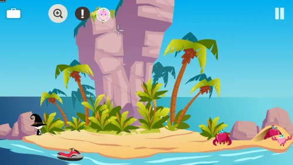
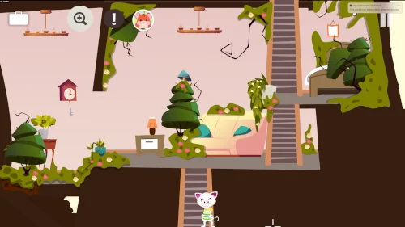
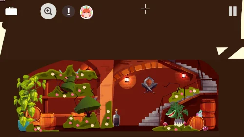

Google Play
Todavía no se muestra una valoración pública.
50+
Ver la ficha y las reseñasAventuras point-and-click · iOS, Android, Windows, macOS, Linux
Sigue un nuevo misterio point-and-click con una flor de cristal, un bastón de bruja y pegatinas para coleccionar.
Descubre los detalles ↓
Explora escenas ilustradas, conoce personajes sorprendentes y encuentra usos creativos para los objetos que descubras. Tiny Story 4 añade otra aventura colorida a la serie.


Todavía no se muestra una valoración pública.
50+
Ver la ficha y las reseñas5.0
Ver la ficha y las reseñasLas valoraciones se muestran por separado para cada tienda y pueden variar según el país y con el tiempo.
Consulta la ficha oficial para conocer disponibilidad, precios e idiomas del juego.
Las soluciones están disponibles en inglés y francés. Las páginas de los juegos también incluyen enlaces a vídeos de las soluciones.